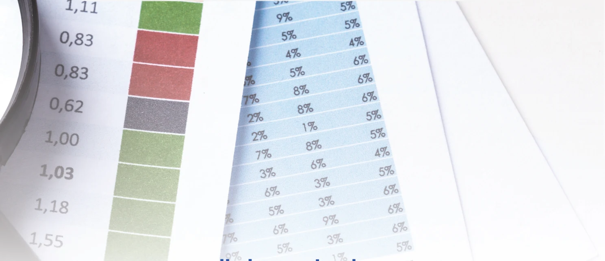
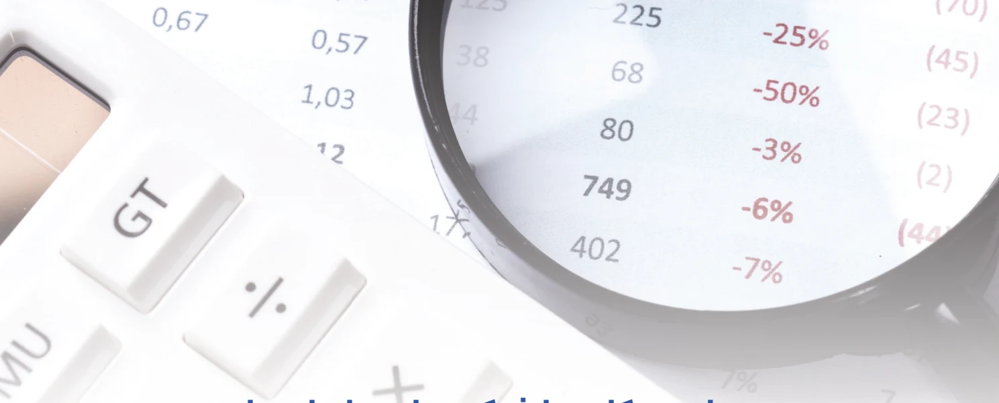

ماموریت
تبدیل ظرفیتها، داراییها، ایدهها و طرحهای اقتصادی به پروژههای آماده سرمایهگذاری و ایجاد ارتباط حرفهای میان صاحبان پروژهها و سرمایهگذاران، تأمینکنندگان مالی، نهادهای اجرایی و شرکای داخلی و بینالمللی.
آژانس تامین مالی و سرمایهگذاری راهبرد
ویژه شرکتها، مؤسسات، هلدینگها، سازمانهای عمومی و صاحبان پروژه

شریک تخصصی برای جذب، توسعه سرمایهگذاری و تامین مالی بینالمللی

تبدیل ظرفیتها، داراییها، ایدهها و طرحهای اقتصادی به پروژههای آماده سرمایهگذاری و ایجاد ارتباط حرفهای میان صاحبان پروژهها و سرمایهگذاران، تأمینکنندگان مالی، نهادهای اجرایی و شرکای داخلی و بینالمللی.
تبدیلشدن به یکی از معتبرترین آژانسهای خصوصی توسعه و جذب سرمایهگذاری ایران و شریک حرفهای پروژههای راهبردی در تعاملات منطقهای و بینالمللی.
ارائه زنجیره یکپارچه خدمات؛ از غربالگری و بستهبندی پروژه تا مذاکره، اخذ مجوز ورود سرمایه و خدمات پس از سرمایهگذاری و تامین مالی.
شرکتها و هلدینگها، سازمانهای عمومی، استانداریها و شهرداریها، مناطق آزاد، دانشگاهها، شرکتهای دانشبنیان و صاحبان پروژه در بخش خصوصی.
شفافیت، محرمانگی، انطباق قانونی، مدیریت تعارض منافع، واقعگرایی مالی، پاسخگویی و گزارشدهی مستمر.
از ظرفیت خام تا پروژه اجراشده
استخراج ظرفیتها، داراییها، پروژههای توسعهای و فرصتهای سرمایهگذاری
ارزیابی اولیه اقتصادی، مالی، فنی، حقوقی، بازار و آمادهسازی پروژه
مطالعات، مدل مالی، ارزشگذاری، پروفایل، یادداشت سرمایهگذاری و اتاق داده
طراحی مدل مشارکت، ترکیب سرمایه و بدهی، تقسیم ریسک و سازوکار خروج
تعیین بازار هدف، تولید محتوای دو زبانه، رویداد و معرفی هدفمند
شناسایی سرمایهگذار، B2B، بررسی اولیه اهلیت و مدیریت مذاکرات
همراهی در مجوز سرمایهگذاری خارجی، ثبت ورود سرمایه و هماهنگی نهادی
پایش تعهدات، رفع موانع، توسعه زنجیره تامین و سرمایهگذاری مجدد
Investment Readiness & Project Packaging
بررسی وضعیت مالکیت، مجوزها، ساختار حقوقی، اطلاعات مالی، بازار، ظرفیت مدیریتی و ریسکهای کلیدی.
امکانسنجی، پیشبینی درآمد و هزینه، جریان نقدی، شاخصهای بازده، تحلیل حساسیت و سناریوها.
ارزشگذاری شرکت، پروژه یا دارایی و طراحی سهامداری، مشارکت مشترک، بدهی یا مدلهای ترکیبی.
پروفایل پروژه، Teaser، Pitch Deck، Information Memorandum، FAQ و مستندات مذاکره.
طراحی ساختار اطلاعات، سطحبندی محرمانگی، کنترل نسخهها و مدیریت دسترسی سرمایهگذاران.
تدوین نقشه راه برای رفع شکافهای مالی، حقوقی، مدیریتی و مجوزی پیش از ورود سرمایهگذار.
Targeting, Promotion & Investor Engagement

تعریف پروفایل سرمایهگذار مطلوب بر اساس صنعت، اندازه پروژه، افق سرمایهگذاری و سطح ریسک
شناسایی شرکتهای راهبردی، هلدینگها، صندوقها، سرمایهگذاران خصوصی و ایرانیان خارج از کشور
تهیه فهرست هدف و اولویتبندی سرمایهگذاران بالقوه
بازاریابی مستقیم و معرفی کنترلشده فرصتها با رعایت محرمانگی
برگزاری جلسات معرفی، نشستهای B2B، Roadshow و رویدادهای تخصصی
مدیریت اعلام علاقهمندی، درخواست اطلاعات و فرایند ارزیابی اولیه
طراحی راهبرد مذاکره و هماهنگی بررسیهای موشکافانه
پیگیری تا دستیابی به شرایط اصلی معامله و قرارداد نهایی
حفظ سوابق معرفی و صیانت از حقوق قراردادی طرفین
Foreign Investment Facilitation

تبیین ساختارهای قانونی ورود سرمایه و الزامات اخذ مجوز سرمایهگذاری خارجی.
همراهی در تهیه، تکمیل و ارائه مدارک مورد نیاز مراجع ذیصلاح.
پیگیری و هماهنگی با وزارتخانههای ذیربط، سازمان سرمایهگذاری، مراکز خدمات سرمایهگذاری و دستگاههای تخصصی.
همراهی در فرایندهای قانونی ورود و ثبت سرمایه نقدی یا غیرنقدی.
شناسایی و تهیه نقشه راه مجوزهای کسبوکار، زمین، زیرساخت و توسعه.
هماهنگی ثبت شرکت، روادید و اقامت، پروانه کار، گمرک و مشاوران تخصصی دارای صلاحیت در حوزههای مورد نیاز از جمله بیمه، مالیات، حقوقی و ملکی.
Aftercare & Institutional Advisory

بررسی پیشرفت پروژه، پیگیری مصوبات و هشدار زودهنگام درباره انحرافات.
هماهنگی برای حل مسائل مجوزی، نهادی، زیرساختی و بیندستگاهی.
پایش رضایت، مدیریت ارتباطات و شناسایی فرصتهای سرمایهگذاری مجدد.
معرفی شرکا، پیمانکاران و تامینکنندگان محلی و توسعه پیوندهای داخلی.
تدوین راهبرد جذب سرمایه، اطلس فرصتها، سبد پروژهها و پنجره واحد.
ایجاد، اعتبارسنجی، رتبهبندی و مدیریت بانک پروژههای سازمان، صنعت، استان یا منطقه.
Sector Focus

انرژیهای تجدیدپذیر، بهرهوری انرژی، آب، محیطزیست و زیرساخت سبز
پروژههای توسعهای بالادستی، صنایع پاییندستی و زنجیره ارزش
تولید، نوسازی معادن و صنایع معدنی و تجهیزات پیشرفته
هوش مصنوعی، فناوری اطلاعات، مراکز داده، پلتفرمها و تجارت دیجیتال
فناوریهای مالی، اینشورتک، پرداخت و زیرساختهای مالی نوین در چارچوب مقررات
شرکتهای فناور، مراکز نوآوری، انتقال فناوری و سرمایهگذاری خطرپذیر
حملونقل، لجستیک، ساختمان، مسکن و توسعه شهری
کشاورزی هوشمند، صنایع غذایی، زنجیره سرد و امنیت غذایی
خدمات سلامت، تجهیزات پزشکی، دارو و زیستفناوری
گردشگری، هتلداری، فرهنگ، هنر و اقتصاد خلاق
دانشگاه، آموزش مهارتی، EdTech، توسعه نیروی انسانی
پروژههای صادراتگرا، لجستیکی، صنعتی و خدماتی
Strategic Partnership Models

ایجاد چارچوب عمومی، تشکیل کارگروه مشترک و تعریف سبد پروژههای اولویتدار.
غربالگری، مطالعات، آمادهسازی، مدل مالی و بستهبندی یک پروژه مشخص.
مدیریت کامل بازاریابی، معرفی، مذاکره و تسهیل فرایند تا قرارداد.
معرفی هدفمند پروژه به سرمایهگذاران مشخص با دوره حمایت از معرفی.
ترکیبی از هزینه خدمات حرفهای و کارمزد مبتنی بر رویداد موفقیت.
ایجاد و بهرهبرداری از سامانه پروژهها و سرمایهگذاران یک سازمان.
طراحی و اجرای نشست معرفی پروژه، B2B، نمایشگاه یا Roadshow.
همکاری مستمر برای توسعه سبد سرمایهگذاری، اصلاح ساختار و جذب سرمایه مرحلهای.
Governance, Compliance & Reporting

فعالیت در حدود مجوزهای معتبر و قوانین و مقررات جمهوری اسلامی ایران
احراز هویت، بررسی اولیه اهلیت و شناخت ذینفع نهایی سرمایهگذار
بررسی اولیه منشأ سرمایه و رعایت الزامات مبارزه با پولشویی و فساد
مدیریت تعارض منافع و افشای روابط مالی موثر
حفاظت از اطلاعات، قرارداد محرمانگی و سطحبندی دسترسی به اتاق داده
تفکیک روشن سرمایه در دست مذاکره، تعهدشده، قراردادشده، واردشده و ثبتشده
گزارشدهی دورهای پروژه و پایش شاخصهای عملکرد
عدم تضمین نتیجه، مجوز، انتقال وجه یا بازده سرمایهگذاری
استفاده از وکلا، حسابرسان، کارشناسان و نهادهای مالی دارای صلاحیت در خدمات تخصصی
A Simple Six-Step Engagement

بررسی اهداف، ظرفیتها و نیازهای سرمایهگذاری سازمان.
دریافت فرمها، اسناد اولیه و تشکیل فهرست فرصتها.
غربالگری و انتخاب پروژههای دارای قابلیت توسعه.
امضای تفاهمنامه و قرارداد اختصاصی پروژه.
تکمیل بسته، بازاریابی، معرفی و مدیریت مذاکرات.
تسهیل مجوزها، ورود سرمایه، پایش و خدمات پس از سرمایهگذاری.
معرفینامه و مدارک ثبتی سازمان
شرح پروژه و وضعیت فعلی
مجوزها و اسناد مالکیت یا بهرهبرداری
میزان سرمایهگذاری انجامشده و سرمایه مورد نیاز
اطلاعات مالی، بازار و مدل درآمدی
مصوبه داخلی برای پیگیری جذب سرمایه
 RAIFA
RAIFAاز فرصت تا سرمایهگذاری
یک جلسه تشخیصی، فهرست پروژههای اولیه و اسناد پایه کافی است تا مسیر پیشنهادی جذب سرمایه برای سازمان شما طراحی شود.
خیابان ملاصدرا، خیابان شیرازی جنوبی، بلوار برزیل غربی، پلاک ۱۳۴ طبقه ۲ واحد ۴